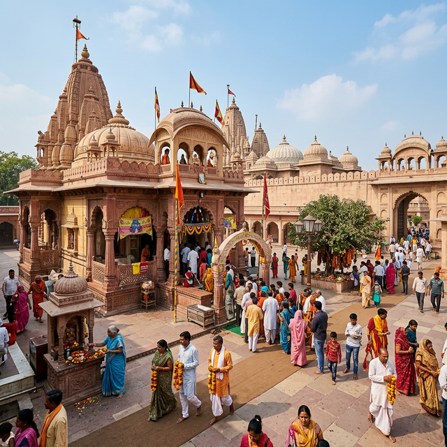

Uttar Pradesh
Mathura, one of India's seven sacred cities (Saptapuri), is revered as the birthplace of Lord Krishna. Located on the banks of the Yamuna River, this ancient city is a tapestry of spirituality, history, and vibrant culture. For devotees, every corner of Mathura resonates with the tales of Krishna's childhood and divinity. The city is famous for its grand temples, series of 25 'ghats' lining the river, and its unique festivals—especially the exuberant celebrations of Holi and Janmashtami.
Mathura is located in western Uttar Pradesh, about 55 km north of Agra and 145 km south-east of Delhi.
The best time to visit is from October to March. Janmashtami (Aug/Sept) and Holi (March) are the peak festive times with spectacular celebrations.
By Air: The nearest commercial airport is New Delhi (DEL), about 160 km away.
By Train: Mathura Junction is a very major railway station well-connected to all parts of India.
By Road: Located on the Yamuna Expressway, making it a comfortable 2-3 hour drive from Delhi.
- Be wary of monkeys near temples; don't carry loose items or food.
- Dress traditionally/modestly when visiting temple complexes.
- Hire an authorized guide to learn about the rich mythology and history.
- The city can be very crowded during festivals; plan well in advance.